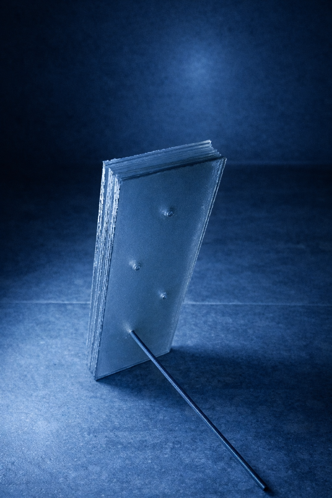
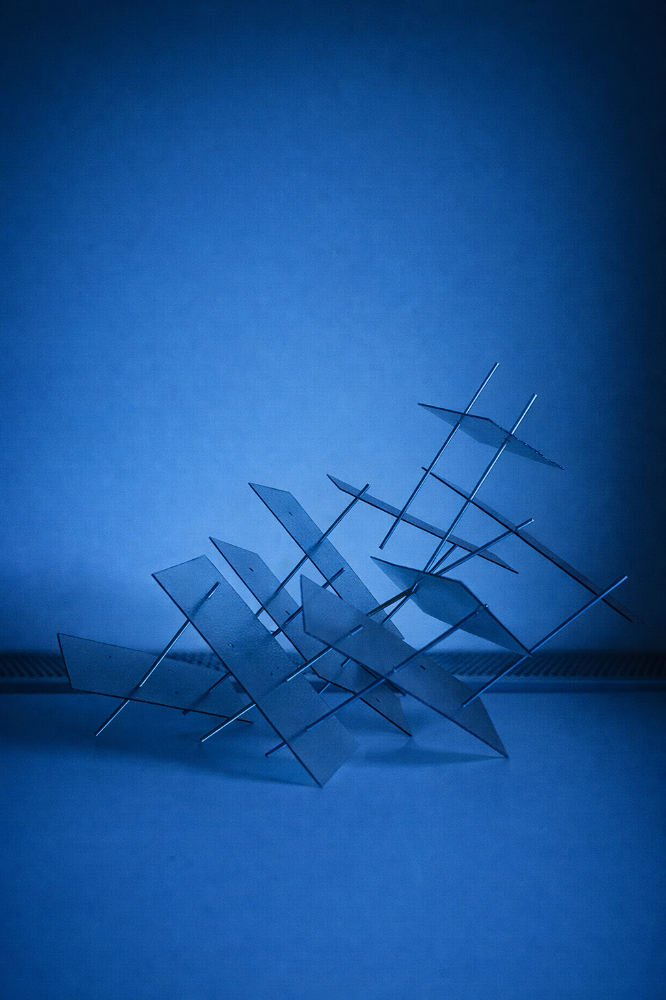

Boredom as Creativity – Introduction
Experimental object – independent work, 2026
Materials: acrylic panels, wooden rods
Materials: acrylic panels, wooden rods
This project views boredom not as an absence of stimulation but as a catalyst for imagination. The result is a portable system composed of ten translucent panels perforated with a regular grid of holes and ten rods that lock into place. Everything fits into a backpack and can be assembled or disassembled with ease. When boredom strikes, the user can open the pack and begin to build.

